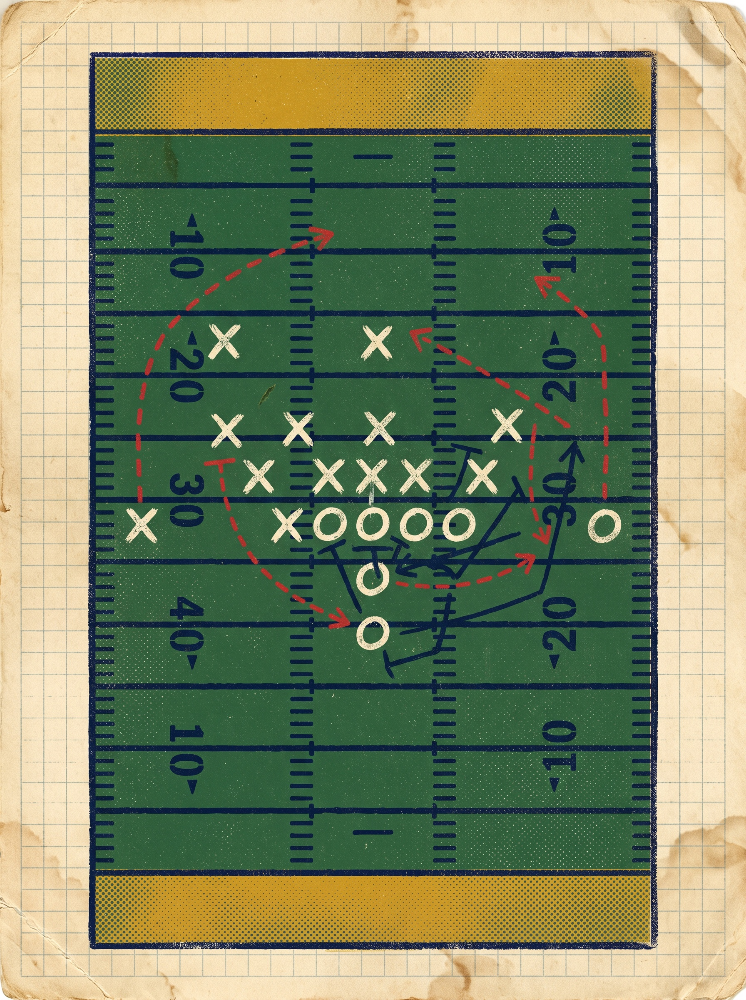

PLAYCALLFOOTBALL
攻撃と守備が、1枚ずつ同時に出す。
プレイコールは、相手の残りカードを読むゲームです。カードを1枚選べば、 相手の手持ちごとの結果がすべて見える。だが選べるのは、たった1枚。 使ったカードはそのドライブでは二度と戻らない——読み合いの材料は、常に減っていきます。

目次
全11章。気になる章から読み進めてください。各章はクリックで移動できます。
これは読み合いのゲームです
Concept / Simultaneous Card Play
プレイコールは、アメフトの1プレーを「1枚のカード」に畳み込んだ2人用のカードゲームです。 あなたはオフェンスとディフェンスのどちらも操作し、CPUと1試合を通して対戦します。 1プレーごとに、両者は同時にカードを1枚だけ伏せて出します。出てから後悔しても、遅い。
同時に出す、という意味
交互に選ぶゲームなら、後手は相手を見てから決められます。本作はそれを許しません。 カードを選ぶ段階で、こちらは「相手の残りカードに対する結果」だけを見せられます。 つまり相手の選択そのものは、最後まで見えない。 情報は十分にあるのに、確信は持てない——それがこのゲームの手触りです。
減っていく選択肢
カードは1ドライブを通して有限です。使えば消え、そのドライブでは戻りません。 だから序盤の1枚が終盤の手札を決めます。何を今使い、何を残すか。 カードの強さより、切る順番が勝敗を分けます。
- 両者は同時に1枚出す（相手の選択は見えない）
- カードを選ぶと、相手の残りごとの結果が見える
- 使ったカードは、そのドライブ中は使えない
「見えている」と「分かっている」は違う。
ハドル。コールの直前、11人が1つになる。
試合の準備
Two Choices Before Kickoff
開始前に決めることは2つだけ。試合の長さと、最初のドライブの向きです。 どちらも試合の性格を変えるので、迷ったら標準のままで構いません。
① 試合の長さ
1試合に含まれるドライブ数を選びます。短ければ1枚の重みが増し、長ければ手札の枯渇と回復のリズムが効いてきます。
② 最初のドライブ
最初に攻撃するのか、守備から入るのか、あるいはコイントスで決めるか。 攻撃から入ればカードを先に消費し、守備から入れば相手の出方を見てから手札を組めます。
ドライブとダウン
How the Field Moves
プレーを重ねて、フィールドを前へ進めます。ダウンを使い切る前に10ヤードを稼げれば、 ダウンは1stに戻る。稼げなければ、攻撃権は相手へ渡ります。この一連の流れが「ドライブ」です。
ダウンは「残り回数」である
一般的なアメフトでは4回のダウンが与えられます。本作もこの原則に沿って進行し、 10ヤードを更新できれば再び1stから始まります。下の図は、4回の攻撃で更新に成功する典型例です。
カードカタログ
Offense 5 / Defense 5
オフェンス5種、ディフェンス5種。いずれも1ドライブ内で使える枚数が決まっています。 カードにカーソルを合わせると拡大します。
オフェンス・カード
ディフェンス・カード
判定とコール
Preview, Then Commit
カードを選んだ時点で確定はしません。まず、相手の残りカードごとに何ヤード得られるかが表示されます。 その結果表を見比べ、納得してから「このカードでコール」で確定します。
結果表の読み方
結果表は「相手の残りカード」×「こちらの獲得ヤード」です。ここから読み取るべきは、 平均点ではなくばらつきの形。どのカードでも安定して稼げるなら、 その一枚は搾取されにくい安全な手です。
相性表
5 × 5 Yardage Grid
オフェンス5種 × ディフェンス5種、全25通りの結果をまとめた表です。 数値は獲得ヤード。マイナスは損失を意味します。表の色は優劣の目印で、実際の判断材料は数値のほうです。
読み合いの図
What the Preview Screen Tells You
これが、カードを選んだ直後に見える画面の構造です。左が自分の手札、右が相手の残りカードごとの結果。 相手がすでに使い切ったカードは、結果表から消えていきます——消えた行こそが、いちばん重要な情報です。
自分の手札（このドライブの残り）
GO ROUTE はもう切った。残りは3枚。
相手の残りカードごとの結果
CPUは、こちらの選択を見ていない
Mixed Strategy
CPUは局面ごとに「混合戦略」でカードを選びます。複数の候補を確率で混ぜて出す方式で、 こちらの手札や直前の選択は参照しません。つまり、癖を読まれているわけではないが、 偏った出し方は統計的に損をする、ということです。
混合戦略であることの意味
完全にランダムではなく、局面に応じて重みが変わります。たとえば大きく前進が必要な場面では、 高回収のカードの比率が上がります。だから「この局面なら来る」という推測は、統計的には一定程度働きます。
戦術Tips
Six Habits of a Better Caller
ルールを覚えたら、あとは切り方の問題です。勝率に効いてくる習慣を6つ挙げます。
用語集
Terms Used in This Manual
本マニュアルとゲーム内で使う用語のうち、迷いやすいものをまとめました。
操作・保存・よくある質問
Controls, Save, Q&A
操作方法
- カードを1枚選ぶ手札からカードをクリックまたはタップ。この時点では確定しません。
- 結果を確認する相手の残りカードごとの獲得ヤードが一覧で表示されます。
- 「このカードでコール」を押すプレーが確定し、両者のカードが同時に開きます。
- 次のドライブへ攻撃権が移り、使用済みカードの状態がリセットされます。
保存と再開
試合の途中経過はブラウザ内に自動で保存されます。ページを閉じてしまっても、 「続きから」で再開できます。保存先はブラウザごとなので、別の端末には引き継がれません。 保存データを消したい場合は、ブラウザのサイトデータ削除で該当する保存領域を消してください。